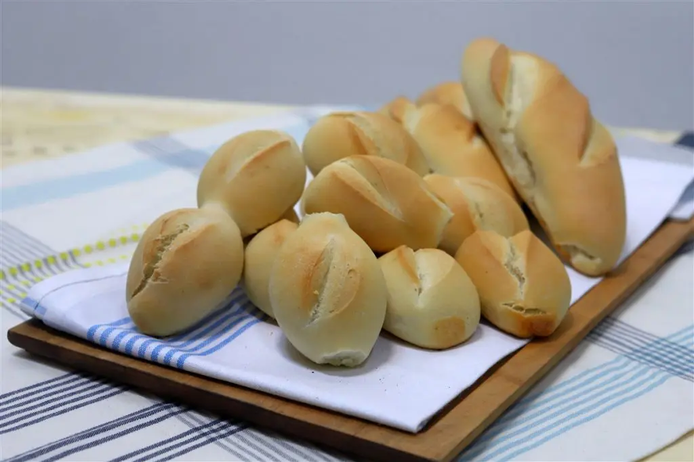

Pan Francés
Un pan crujiente por fuera y suave por dentro, ideal para acompañar cualquier comida.
Receta
- 500g de harina de trigo
- 10g de sal
- 7g de levadura seca
- 320ml de agua
Pasos:
- Mezclar la harina con
la sal y la levadura. - Añadir el agua y amasar
hasta formar una masa elástica. - Dejar fermentar durante
1 hora. - Formar baguettes y dejarlas
reposar 30 minutos. - Hornear a 220°C con vapor
durante 25 minutos. - Dejar enfriar antes de servir.

Fabricación
El pan francés se elabora
con harina, agua, sal y levadura,
y se hornea a alta temperatura para
obtener su corteza crujiente.